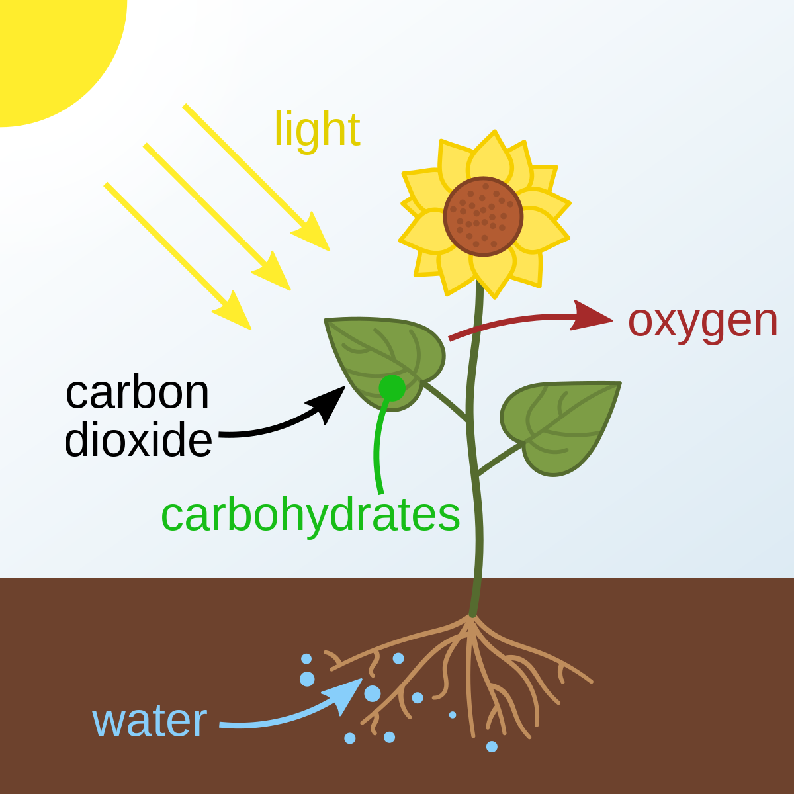

Plants use their leaves to carry out photosynthesis. This procedure carrys out the creation of Glucose (see the glucose.html for more infomation). Photosynsis needs sunlight to work. It also needs water to work. This is becasuethere is a reaction between them that creates glucose and oxgen. The glcose is then stored in the roots as starch.
